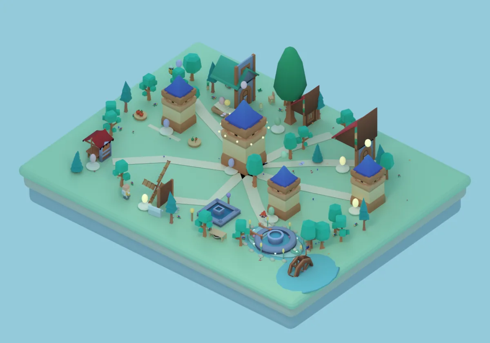

마법마을 · 3D 모험 지도
어디부터 탐험해 볼까요?
수학 정원의 열매 바구니, 이야기 도서관의 책, 연못의 생명들을 찾아보아요.
입체 마법마을 미리보기

입체 지도를 불러오는 동안 그림을 볼 수 있어요.
화면을 밀거나 방향키로 돌려 보세요. 3D가 지원되지 않아도 아래 장소 버튼으로 이동할 수 있어요.
오늘의 모험
가고 싶은 곳을 고르면, 해당 장소로 이동할 수 있어요.
다른 장소도 보기
선택한 목적지
수학 정원
열매를 옮겨 보고 전체 수가 어떻게 되는지 알아보아요.
이 지도는 둘러보기 전용입니다. 학습 기록과 보상은 기존 마법마을에서 관리해요.